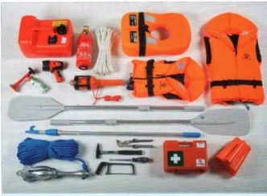
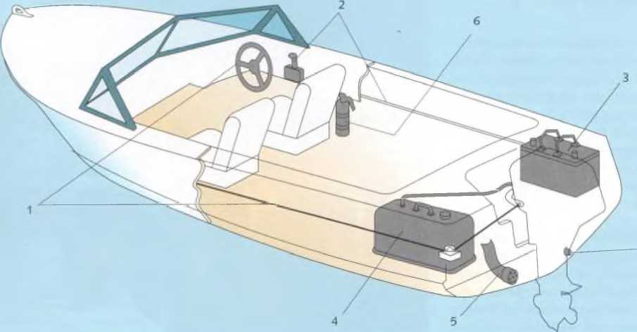

Sicherheitsausrüstung für ein kleines Sportboot

Sicherheits-Check für ein Außenborderboot
Für jeden an Bord muss eine ohnmachtsichere Rettungsweste vorhanden sein. Ohnmachtsicher heißt, sie dreht einen Bewusstlosen in eine stabile Rückenlage und hält sein Gesicht über Wasser. Es gibt ohnmachtsichere Feststoffwesten und luftgefüllte Westen, die durch CO2-Patronen aufgeblasen werden. Sie müssen mindestens alle zwei Jahre gewartet werden. Schwimm- und Rettungswesten unterliegen einer Euro-Norm (EN) und Baumusterprüfung (CE-Kennzeichnung). Verständlicherweise muss die Sicherheitsausrüstung fürs Boot umso umfangreicher sein, je größer das Boot ist.
► Unerlässlich in einem kleinen Sportboot ist ein Beifahrergriff.
► In offenen Booten niemals während der Fahrt auf der Bordkante oder der Rückenlehne sitzen. In einer plötzlich gerissenen Kurve, bei einem unbeabsichtigten Zurückreißen des Gashebels, kann man auf die Windschutzscheibe oder rückwärts ins Cockpit geschleudert oder gar über Bord katapultiert werden.
► Beim An- und Ablegen und allen Manövern, bei denen mit kurzen Gasstößen gearbeitet werden muss, niemals ohne sicheren Halt im Boot oder an Deck stehen.
Radarreflektoren wirken nach dem Prinzip des Tripelspiegels der optischen Rückstrahler von Autos und Fahrrädern. Sie dienen dazu, kleinere Boote auf den Radarschirmen der Berufsschifffahrt zu erkennen, und sind ein entscheidender Sicherheitsfaktor.
Bei unsichtigem Wetter dürfen Sportboote aus Sicherheitsgründen nur dann fahren, wenn sie neben einer UKW-Sprechfunkanlage mit einem für die Binnenschifffahrt zugelassenen Radargerät ausgerüstet sind und der Schiffsführer das Sprechfunkzeugnis (UBI) und das Radarpatent besitzt.